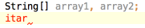
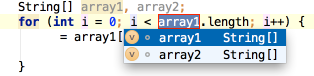

Live Templates allow you to generate many typical code constructs in seconds! For example, type

in a method and press the Tab key to see what happens.

Use the Tab key to move between the template fields. See File | Settings | Live Templates for more details.